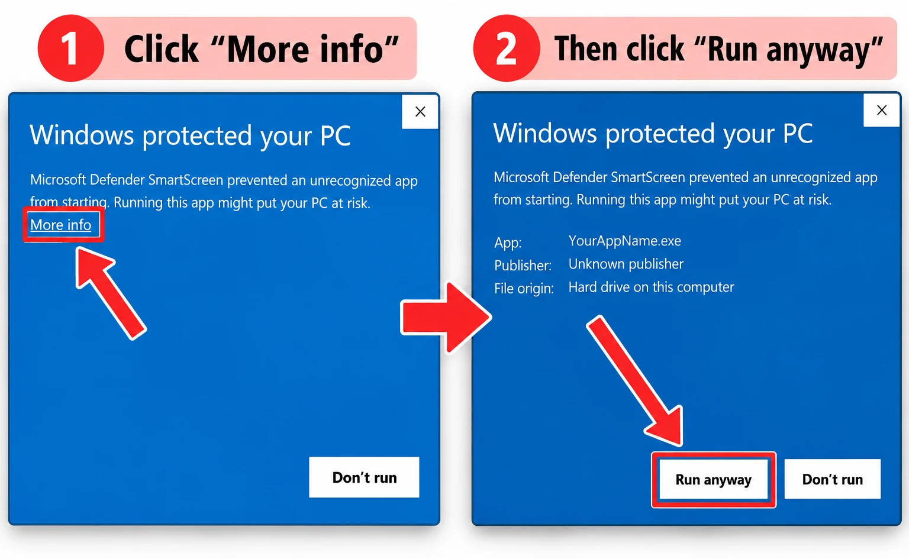

Download Wynko
The desktop app and the browser extension work together, and Android has an Advanced Lock build for a spare study phone. Install both for the strongest Focus Lock.
Wynko for Windows
Blocks distracting apps during your focus blocks and links your browser extension automatically.
Download for Windows 64-bit Windows 10 and 11 · about 3.6 MB · Download not starting? Use the GitHub link⚠️ Windows may show “Windows protected your PC” — that’s expected
Wynko is a new app, so Windows doesn’t recognise it yet. When more people download Wynko, this warning will go away. Until then, do these two steps: click More info, then Run anyway.

An older “revm2” install is removed for you.Wynko for Android · Advanced Lock
The strongest block Android allows. Wynko takes device-owner control of the phone: other apps are suspended and can’t be opened, only Wynko runs, and Settings is locked while a session is live.
Download APK Direct download (not on Google Play) · Android 7.0+ · Download not starting? Use the GitHub link- Reset a spare phone (or use one that has never been set up) and skip signing in to Google.
- Download the APK above and allow “Install unknown apps” for your browser when Android asks.
- Open Wynko and choose Advanced Lock; it walks you through the one-time device-owner setup.
Wynko Focus Lock extension
Blocks distracting sites and YouTube channels in Chrome, Edge and Brave. With the desktop app running, it links itself to your account.
Download extension- Unzip the file somewhere you’ll keep it.
- Open chrome://extensions (or edge://extensions) and turn on Developer mode.
- Click Load unpacked and pick the unzipped folder.